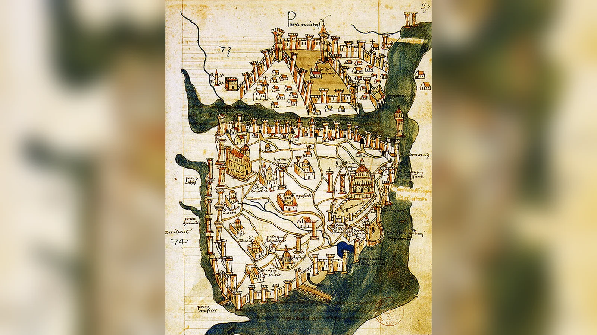
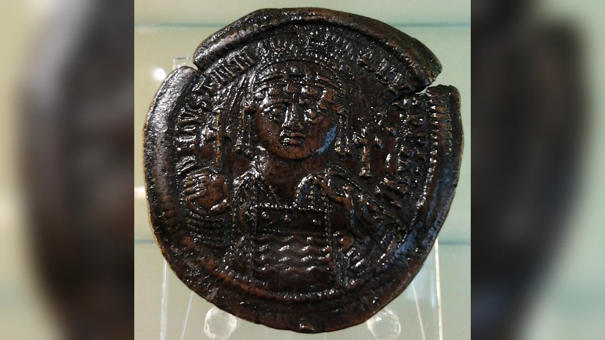
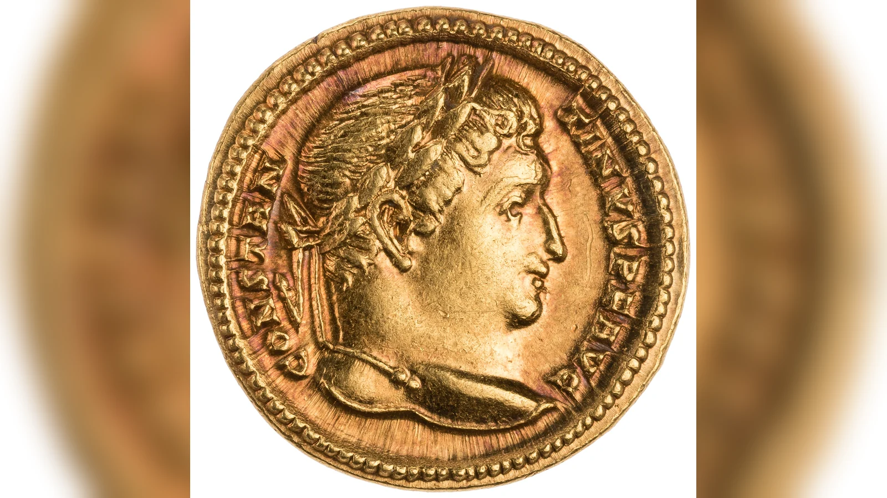
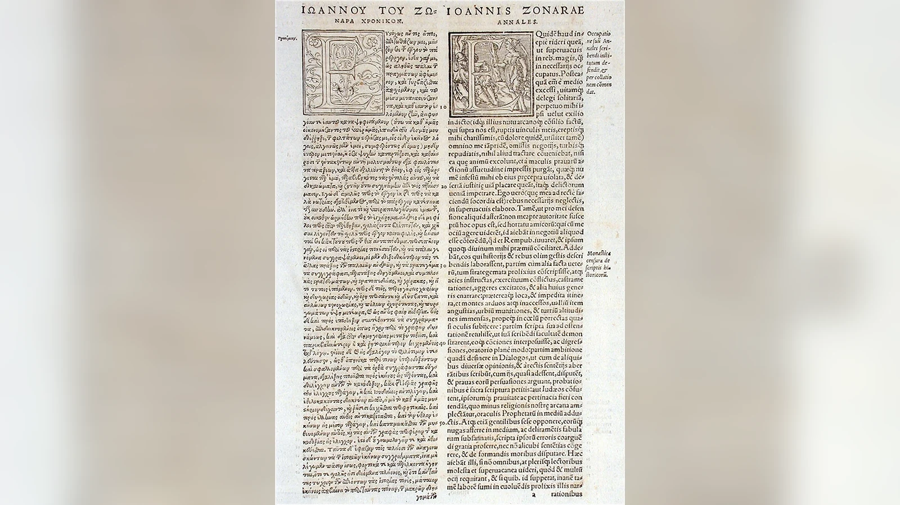
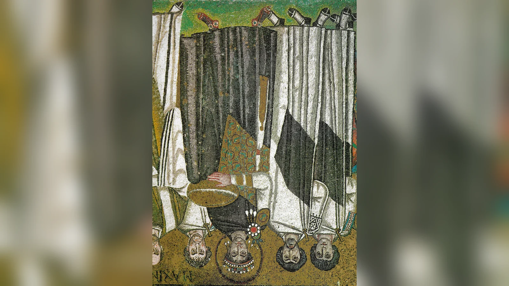
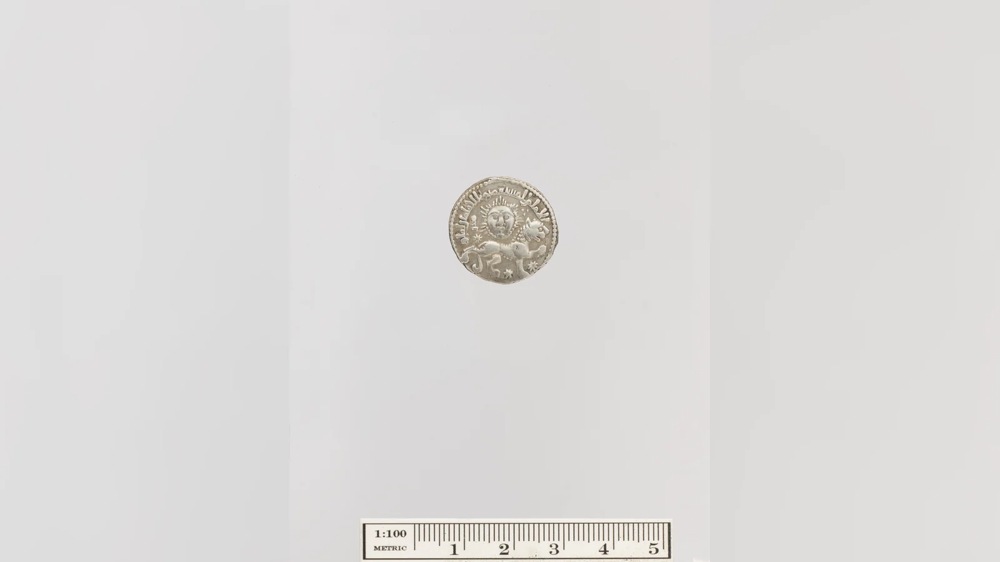
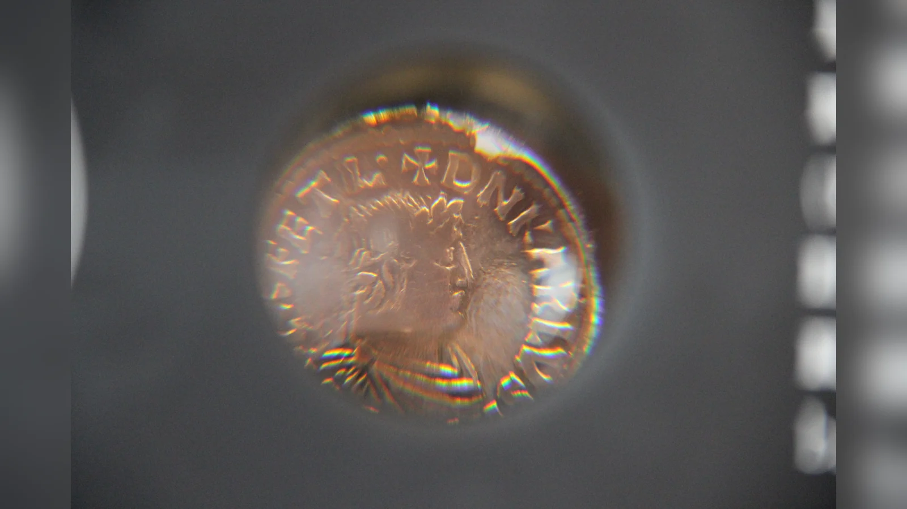
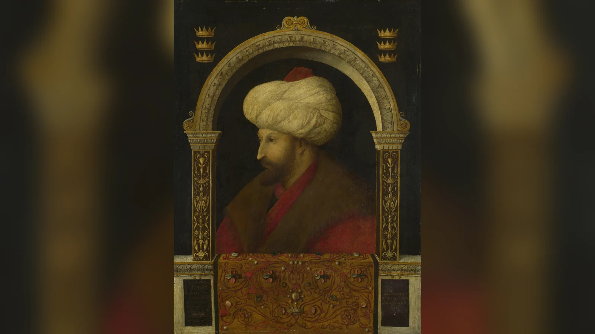
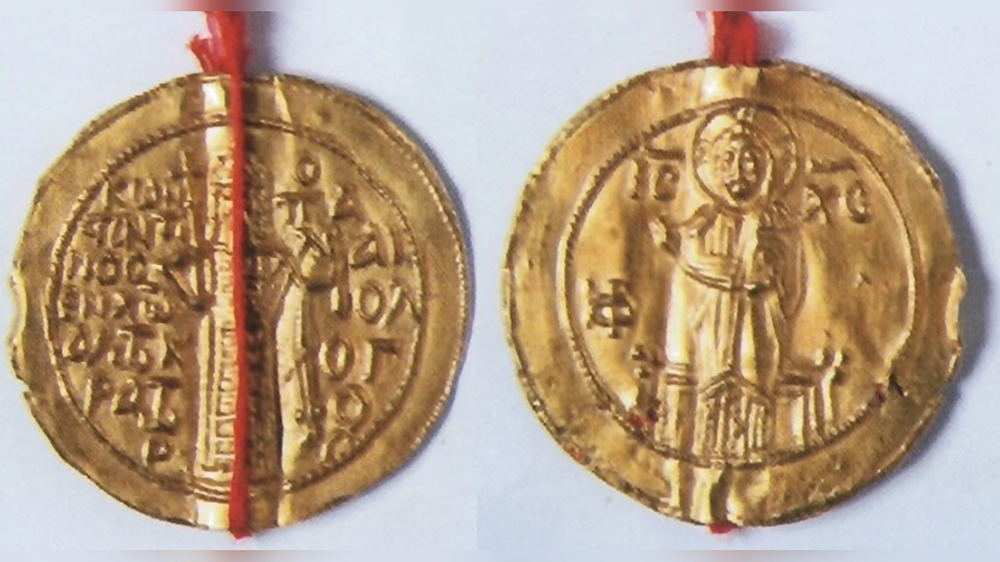

Bizans Diye Bir Devlet Gerçekten Var mıydı?

"Bizans diye bir devlet var mıydı?" sorusunun cevabı, iki ayrı meseleyi birbirinden ayırmayı gerektirir. Bugün Bizans İmparatorluğu dediğimiz devlet, kendi çağında "Bizans İmparatorluğu" adını resmî devlet adı olarak kullanmıyordu. Konstantinopolis merkezli imparatorluğun insanları kendilerini çoğunlukla Rhomaioi, yani Romalılar olarak tanımlıyor; siyasi dünyalarını Roma İmparatorluğu'nun devamı olarak görüyorlardı. Buna karşılık bundan "Bizans diye anlatılan devlet hiç yaşamadı" sonucu çıkmaz. Modern tarihçilerin Bizans dediği siyasi yapı, Roma İmparatorluğu'nun doğuda yaşamaya devam eden, yüzyıllar içinde büyük ölçüde dönüşmüş ortaçağ evresidir.
Bu ayrım önemlidir. Tarihçilikte bir topluma sonradan verilen ad ile o toplumun tarihsel varlığı aynı konu değildir. "Bizans" geriye dönük bir sınıflandırmadır; fakat sınıflandırdığı imparatorluk, kurumları, hükümdarları, orduları, yasaları, şehirleri ve halklarıyla gerçektir. Üstelik bu devletin Roma iddiası yalnız nostaljik bir hatıra değildi. İmparatorluk makamında, hukuk geleneğinde, siyasi terminolojide, sikkelerde, mühürlerde ve insanların kendilerini adlandırma biçimlerinde Roma sürekliliği görülebilir.
Sorun, modern isimlerin geçmişteki insanların kendi dünyalarını nasıl gördüğünü kolayca görünmez hâle getirebilmesidir. "Batı Roma" ve "Doğu Roma" ifadeleri bugün anlatımı kolaylaştırır; fakat 395 yılında iki yeni devletin kurulduğunu ve bunlardan birinin daha sonra "Bizans" adını aldığını düşünmek yanıltıcıdır. Benzer biçimde 476'da Roma İmparatorluğu'nun tamamının sona erdiğini söylemek, Konstantinopolis merkezli Roma devletinin yaklaşık bin yıl daha yaşadığı gerçeğini gözden kaçırır.
Bizanslılar Kendilerine Ne Diyordu?
Bizans dünyasında en önemli öz adlardan biri Yunanca Rhomaioi idi: Romalılar. Tekili Rhomaios olan bu kelime, Latincedeki Romanusun Yunanca karşılığıydı. Ortaçağ boyunca anlamı sabit ve tek katmanlı değildi; siyasi aidiyet, hukuk, din, dil ve kültürle ilişkisi dönemlere göre değişti. Buna rağmen imparatorluk halkının ve özellikle Yunanca konuşan ana nüfusun Roma kimliğini benimsediği, kaynaklarda son derece güçlü biçimde görülür.
Devlet için de Roma adlandırmaları kullanılıyordu. Basileia ton Rhomaion kabaca "Romalıların İmparatorluğu" anlamına gelir. Romania ise Roma siyasi dünyası veya Romalıların ülkesi anlamında kullanılabilen başka bir ifadeydi. Buradaki Romania, modern Romanya devletiyle karıştırılmamalıdır. Ortaçağ kaynaklarındaki kelime çok daha eski bir Roma siyasi coğrafyası kavramına aittir.
Yine de "Bizans'ın resmî adı kesin olarak şuydu" biçiminde modern devlet tabelası aramak doğru değildir. Ortaçağ imparatorluklarının isim kullanımı bugünkü anayasal devletlerin standartlaştırılmış resmî adlandırmasına benzemez. Bir hükümdarın unvanı, bir kanunun giriş formülü, bir mühür üzerindeki ifade ve tarihçinin kullandığı siyasi ad aynı biçimde olmak zorunda değildi. Bu yüzden Basileia ton Rhomaion tarihsel olarak çok anlamlıdır; fakat onu günümüzdeki "Türkiye Cumhuriyeti" gibi tek ve değişmez resmî isim kategorisine sokmak anakronik olur.
Roma kimliği imparatorluk nüfusunun tamamının aynı etnik kökenden geldiği anlamına da gelmez. Devlet yüzyıllar boyunca Balkanlar, Anadolu, Levant, Mısır, İtalya, Kafkasya çevresi ve Ege'de farklı diller konuşan, farklı yerel geleneklere sahip toplulukları yönetti. "Romalı" sözcüğü bu uzun tarihte hukuki ve siyasi bir üyelikten daha güçlü kültürel aidiyetlere kadar çeşitli anlamlar taşıdı. Modern araştırmada da Romalılığın ne ölçüde etnik, ne ölçüde siyasi ve kültürel bir kimlik olarak anlaşılması gerektiği tartışılmaktadır. Tartışmalı olan Romalı adının kullanılıp kullanılmadığı değil, bu adın farklı dönemlerde toplumsal olarak tam olarak ne ifade ettiğidir.
Bizans İmparatorluğu'nun Gerçek Adı Neydi?

"Bizans İmparatorluğu'nun gerçek adı neydi?" sorusu internette sık soruluyor, fakat sorunun kendisi modern bir varsayım içeriyor: her devletin pasaport kapağında yazacak türden tek bir resmî adı olması gerektiği düşüncesi. Roma dünyasının ortaçağ evresinde böyle bir standart aramak yanıltıcıdır. İmparatorlar kendilerini Roma imparatorluk geleneği içinde tanımladı; halk için Romalılar, siyasi yapı için Roma ve Romalıların imparatorluğu anlamına gelen ifadeler kullanıldı.
İmparatorluk unvanları bunun somut örneklerindendir. Geç Roma döneminden ortaçağa uzanan süreçte Latince ve Yunanca unvanlar değişti; imperator, augustus, basileus ve autokrator gibi ifadeler farklı dönemlerde farklı ağırlık kazandı. 7. yüzyıldan itibaren Yunancanın devlet yazışmalarında ve unvanlarda ağırlığı daha görünür hâle geldi. Fakat dildeki dönüşüm, imparatorluk makamının kendisini Roma geleneğinin dışına çıkardığı anlamına gelmedi.
Sikkeler ve mühürler de devlet kimliğinin değişim içindeki devamlılığını gösterir. İmparatorların portreleri, haçlar, İsa tasvirleri, Yunanca yazıtlar ve Roma imparatorluk unvanları yüzyıllar boyunca farklı kombinasyonlarda kullanıldı. Bir 6. yüzyıl Justinianus sikkesi ile 11. yüzyıl imparatorluk sikkesi görsel olarak aynı değildir; zaten olması da beklenmez. Roma devletinin siyasi devamlılığını savunmak, bin yıl boyunca kıyafetin, sanatın, dilin, ordunun veya yönetim biçiminin hiç değişmediğini iddia etmek değildir.
Bu nokta "Bizans mı, Roma mı?" tartışmasının merkezindedir. Bir devlet değişebilir ve yine de geçmiş kurumlarıyla siyasi devamlılık kurabilir. Roma'nın kendisi de Cumhuriyet'ten Principatus'a, geç antik imparatorluktan Hristiyan monarşisine dönüşürken sabit kalmamıştı. Konstantinopolis merkezli ortaçağ devleti de bu dönüşüm zincirinin devamıdır.
Byzantion, Konstantinopolis ve Bizans Adları Nereden Geliyor?
"Bizans" sözcüğünün kökeni hayalî değildir. İstanbul'un tarihî yarımadasındaki antik Yunan yerleşiminin adı Byzantion idi. Roma egemenliğine giren şehir, I. Konstantinos tarafından yeniden inşa edilerek 330 yılında imparatorluk başkenti hâline getirildi. Konstantinos'un şehri resmen "Yeni Roma" düşüncesiyle ilişkilendirildi; Konstantinoupolis, yani Konstantinos'un şehri adı ise kalıcı biçimde yerleşti.
Antik Byzantion ile "Bizans İmparatorluğu" aynı şey değildir. İlki belirli bir antik kenttir. İkincisi ise modern tarihçilerin Konstantinopolis merkezli ortaçağ Roma İmparatorluğu için kullandığı dönemlendirme terimidir. Aralarındaki bağ, modern adlandırmanın başkentin eski isminden türetilmesidir.
Şehrin tarih boyunca farklı adları ve adlandırma gelenekleri oldu. Nova Roma/Nea Rome siyasi ve törensel bir kavramdı; Konstantinopolis günlük ve resmî kullanımda çok güçlüydü. İslam dünyasında Konstantiniyye biçimleri kullanıldı. İstanbul adının kökeni ve yaygınlaşması da ayrı bir dil tarihi konusudur. Bunları birbirinin yerine geçmiş tek bir resmî isim zinciri gibi göstermek doğru olmaz.
"Byzantine" türü sıfatların eski ve ortaçağ metinlerinde hiç görülmediğini söylemek de fazla kesin olur. Konstantinopolis'le bağlantılı "Byzantios" kullanımları farklı bağlamlarda bulunabilir. Fakat bunlar modern tarihçiliğin bütün ortaçağ Roma devletine verdiği "Byzantine Empire/Bizans İmparatorluğu" adıyla aynı kavramsal işlevi taşımaz. Modern terimin tarihi, antik şehir adının varlığından çok daha geç bir bilimsel sınıflandırma sürecidir.
Bizans Adını Hieronymus Wolf mu İcat Etti?

İnternette sık tekrarlanan anlatıya göre Alman hümanist Hieronymus Wolf 1557'de "Bizans" adını icat etmiş ve Doğu Roma İmparatorluğu'nu ilk kez bu adla anmıştır. Wolf gerçekten 16. yüzyılda Doğu Roma tarihçilerinin metinlerini yayımlayan önemli isimlerden biridir ve 1550'lerde hazırladığı edisyonlar daha sonra Corpus Historiae Byzantinae adıyla ilişkilendirilen yayın geleneğinin temel parçaları arasında yer aldı. Fakat "1557'de Bizans kelimesini yoktan icat etti" cümlesi güncel araştırmanın desteklediği kadar sağlam değildir.
Öncelikle Byzantion antik çağdan beri bilinen şehir adıydı. "Byzantine/Byzantinus" biçimlerinin Konstantinopolis ve oradaki yazarlarla bağlantılı kullanımları da Wolf'tan önceye uzanabilir. Dolayısıyla Wolf'un yaptığı, daha önce var olmayan bir kelime yaratmak değildi.
Daha önemlisi, erken modern Avrupa'da Wolf'un çalışmalarından sonra herkesin aniden "Roma İmparatorluğu" yerine "Bizans İmparatorluğu" demeye başladığı da doğru değildir. Yeni araştırmalar 16. ve 17. yüzyıl bilim dünyasında "Yunanlar", "Yunan İmparatorluğu", "Konstantinopolis İmparatorluğu", Roma tarihi ve Bizans bağlantılı terminolojinin yan yana kullanılmaya devam ettiğini gösteriyor. Wolf'un kendisi de doğu imparatorluğunu kavramsal olarak modern ders kitaplarındaki biçimde Roma'dan koparan tek bir terminolojik devrim başlatmış değildi.
- yüzyılda Fransa'da Louis XIV döneminde yayımlanan büyük Bizans tarihçileri külliyatı, Charles du Cange gibi bilginlerin çalışmaları ve sonraki Avrupa filolojisi, "Bizans"ı ayrı bir inceleme alanı hâline getiren uzun sürecin parçalarıdır. 19. yüzyılda Bizans araştırmalarının akademik disiplin olarak kurumsallaşmasıyla terminoloji çok daha sistemli hâle geldi. Bu yüzden bir "mucit" ve tek bir "doğum tarihi" aramak yerine birkaç yüzyıla yayılan tarih yazımı geleneğini izlemek daha doğrudur.
Wolf'un önemini küçültmek de gereksizdir. Doğu Roma tarihçilerinin metinlerini düzenleyip Latin okur dünyasına taşıması, sonraki araştırma geleneği için etkili oldu. Yanlış olan, bu etkiyi "1557'den önce Bizans diye bir kelime yoktu; Wolf siyasi amaçla yeni devlet icat etti" biçiminde anlatmaktır.
Doğu Roma ve Bizans Aynı Devlet mi?

"Doğu Roma" ile "Bizans" tarihçilikte büyük ölçüde aynı siyasi sürekliliğin farklı dönemlerini ve görünümlerini anlatmak için kullanılan adlardır. Aralarında 1453'e kadar hiç değişmemiş bir devlet yapısı bulunduğunu söylemek ne kadar sorunluysa, birbirinden tamamen bağımsız iki devlet olduklarını düşünmek de o kadar sorunludur.
395 yılı bu konuda sık kullanılan dönüm noktasıdır. I. Theodosius'un ölümünden sonra imparatorluk yönetimi oğulları Arcadius ve Honorius arasında doğu ve batı sarayları şeklinde paylaşıldı. Fakat bu olay, modern anlamda iki bağımsız ülkenin kuruluş ilanı değildi. İmparatorluğun birden fazla hükümdar tarafından yönetilmesinin daha eski örnekleri vardı. Doğu ve batı yönetimleri giderek ayrı siyasi rotalar izledi; buna rağmen Roma imparatorluk meşruiyeti ortak miras olarak kaldı.
Doğudaki yönetim, Konstantinopolis'te imparatorluk sarayını, Roma hukuk geleneğini, vergi ve idare mekanizmalarını, orduyu ve diplomatik sistemi sürdürdü. Justinianus'un 6. yüzyıldaki fetihleri de kendisini yeni bir "Bizans devletinin" hükümdarı olarak değil, Roma imparatoru olarak düşündüğü siyasi dünyada gerçekleşti. Onun hukuk derlemesi bugün Corpus Iuris Civilis adıyla anılan Roma hukuk geleneğinin en etkili ürünlerinden biri oldu.
Bununla birlikte 10. yüzyıl Konstantinopolis'ini Augustus dönemi Roma'sının değişmeden korunmuş kopyası sayamayız. İmparatorluk büyük ölçüde Yunanca konuşur hâle gelmişti; Hristiyanlık siyasi ve toplumsal hayatın merkezindeydi; eski eyalet sistemi, ordu, aristokrasi ve ekonomik düzen defalarca dönüşmüştü. Toprakları da çok küçülmüş ve coğrafi ağırlık merkezi değişmişti. Siyasi devamlılık kültürel donmuşluk değildir.
"Doğu Roma" ifadesinin kendisi de dikkat ister. Dönemin insanları her gün devletlerinin tabelasına "Doğu Roma İmparatorluğu" yazmıyordu. Modern tarihçilik bu ifadeyi Roma dünyasının doğu bölümünü batıdan ayırmak için kullanır. Dolayısıyla "Bizans sonradan verilmiş addır, o hâlde yalnız Doğu Roma demeliyiz" yaklaşımı ironik biçimde başka bir modern dönemlendirme etiketini tek tarihsel öz ad gibi kullanabilir.
"Bizans" İçin Tek Bir Başlangıç Tarihi Var mı?
Modern terimin başka bir özelliği de "Bizans ne zaman başladı?" sorusuna tek bir tartışmasız tarih vermemesidir. I. Konstantinos'un Konstantinopolis'i 330'da başkent olarak açması güçlü bir dönüm noktasıdır; fakat o tarihte kimse yeni bir Bizans İmparatorluğu kurulduğunu ilan etmedi. 395'te I. Theodosius'un ölümünden sonra doğu ve batı saraylarının ayrışması önemlidir; yine de Roma siyasi birliği fikri bir gecede yok olmadı. 476, batıdaki imparatorluk makamının sona ermesini anlatır, doğudaki devletin kuruluşunu değil.
Justinianus'un 565'te ölümü veya 7. yüzyıldaki Herakleios dönemi de başlangıç çizgisi olarak kullanılabilir. Özellikle 7. yüzyıl; toprak kayıpları, yönetimsel dönüşümler, Yunancanın artan ağırlığı ve eski geç Roma Akdeniz dünyasının çözülmesi nedeniyle birçok tarihçi için anlamlıdır. Buna rağmen bu dönüşümlerin hiçbiri "dün Roma'ydı, bugün Bizans oldu" şeklinde gerçekleşmedi.
Bu nedenle Bizans tarihinin başlangıç tarihi, büyük ölçüde tarihçinin hangi dönüşümü ölçmek istediğine bağlıdır. Siyasi devamlılığa bakıldığında keskin bir kuruluş anı bulmak zordur. Kültür, dil veya idari yapı incelendiğinde ise farklı eşikler öne çıkar. Tam da bu nedenle "Bizans" bir öz addan çok dönemlendirme aracıdır.
Aynı durum sona erişte daha nettir. 1204'te Konstantinopolis Latinler tarafından ele geçirildi ve Roma siyasi dünyası rakip merkezlere parçalandı; 1261'de başkent geri alındı. 1453'te ise Konstantinopolis merkezli imparatorluk siyasi varlığını kesin olarak kaybetti. Dolayısıyla "Bizans"ın başlangıcı bulanık, sonu daha belirgin bir tarihçilik kategorisidir. Bu asimetri bile terimin çağdaş bir devlet adı değil, geçmişi anlamlandırmak için oluşturulmuş modern çerçeve olduğunu gösterir.
Başlangıç tarihindeki belirsizlik, "Bizans adı sonradan verildiğine göre devlet de sonradan icat edildi" çıkarımının neden işlemediğini ayrıca gösterir. Tarihçiler Roma dünyasının çok uzun dönüşümünü inceleyebilmek için analitik sınırlar çizer. Bu sınırlar gerçek tarihsel değişimlere dayanır, fakat geçmişte yaşayan insanların aynı çizgileri aynı tarihlerde çektiği anlamına gelmez. Geç Antik Çağ ile Orta Çağ arasındaki geçişin kendisi de tek bir hükümdarın kararıyla değil, kuşaklar boyunca gerçekleşti.
Benzer dönemlendirme sorunları başka tarih alanlarında da vardır. Bir çağın veya siyasi kültürün modern adı, o çağın insanlarının kendi kullandığı adla birebir örtüşmek zorunda değildir. Burada yapılması gereken modern terimi yasaklamak değil, terimin hangi amaçla kullanıldığını açıklamaktır. Bizans sözcüğü Roma'nın doğudaki ortaçağ dönüşümünü pratik biçimde işaret eder; fakat bu pratiklik Roma devamlılığının yerine geçirilmemelidir.
Roma İmparatorluğu 476'da Gerçekten Yıkıldı mı?
476 yılı, Batı Roma İmparatorluğu'nun sonu için geleneksel tarihtir. Germen komutan Odoacer, genç imparator Romulus Augustulus'u tahttan indirdi. Batıdaki ayrı imparatorluk makamı yeniden kalıcı biçimde kurulmadı. Bu yüzden 476, Avrupa tarihinin en güçlü dönemlendirme tarihlerinden biri hâline geldi.
Fakat "Roma İmparatorluğu 476'da yıkıldı" cümlesi, bütün Roma devletini kastediyorsa eksiktir. Konstantinopolis'te İmparator Zeno hüküm sürüyordu ve doğudaki imparatorluk kurumsal varlığını devam ettirdi. 6. yüzyılda Justinianus'un orduları Kuzey Afrika'yı, İtalya'yı ve İspanya'nın bir bölümünü yeniden imparatorluk denetimine aldı. Bu fetihleri yapan siyasi yapı kendisini kaybolmuş Roma'nın yerine kurulmuş yabancı bir devlet olarak görmüyordu.
476'nın modern tarih kitaplarında çok büyük yer kaplaması, Batı Avrupa tarihinin dönemlendirilmesi açısından anlaşılabilir. İtalya'daki batı imparatorluk makamının sona ermesi gerçekten önemliydi. Sorun, Batı Roma'nın sonunu bütün Roma tarihinin sonu hâline getirmektir. Roma siyasi geleneğinin Konstantinopolis'te sürmesi, 476'yı önemsizleştirmez; olayın neyin sonu olduğunu daha doğru tanımlar.
Bu nedenle "Roma 476'da yıkıldı, Bizans başladı" biçimindeki çizgi pratik bir okul şeması olabilir, fakat tarihsel süreç için fazla keskindir. Bizans'ın başlangıcı için 330, 395, 476, Justinianus'un ölümü, Herakleios dönemi veya 7. yüzyıl dönüşümleri gibi farklı tarihler önerilebilmesinin nedeni de budur. Ortada tek gün içinde Roma olmaktan çıkıp Bizans olan bir devlet yoktur.
Bizanslılar Romalı mıydı, Yunan mıydı?

Bu soruya "Romalıydılar, Yunan değillerdi" veya "Yunandılar, Roma adını kullanıyorlardı" diye cevap vermek, ortaçağ kimliklerini modern ulusal kimlik kutularına sıkıştırır. Dil, siyasi aidiyet, etnik köken, din, hukuk ve kültür aynı şey değildir; üstelik bunların ilişkisi bin yıllık Bizans tarihi boyunca değişti.
Orta ve geç Bizans döneminde imparatorluğun ana dili Yunancaydı. Eğitimli yazarlar Homeros, Thukydides ve antik Yunan edebiyatını okuyordu. Sanat, felsefe ve eğitimde Helen geçmişi önemliydi. Fakat bundan siyasi kimliğin otomatik olarak "Yunan devleti" olduğu sonucu çıkmaz. İnsanlar Yunanca konuşurken kendilerini Rhomaioi diye adlandırabiliyordu.
"Helen" sözcüğünün tarihi de değişkendir. Erken Hristiyan ve ortaçağ metinlerinde Hellen bazen "pagan" anlamına gelebiliyordu; bu nedenle Hristiyan bir Romalı için doğrudan olumlu öz kimlik değildi. Antik Yunan kültürünün prestiji ise hiçbir zaman ortadan kalkmadı. Özellikle geç Bizans döneminde "Helen" adını kültürel veya soy bağlantısı bakımından daha güçlü kullanan yazarlar ortaya çıktı. 15. yüzyılda Georgios Gemistos Plethon bunun en dikkat çekici örneklerinden biridir.
Bu gelişme bütün toplumun bir anda Romalı kimliğini bıraktığını göstermez. Aynı kişi siyasi bakımdan Romalı, dil ve klasik kültür bakımından Helen mirasının parçası, din bakımından Ortodoks Hristiyan ve yerel aidiyet bakımından Konstantinopolisli, Trabzonlu veya Mora kökenli olabilirdi. Modern kimlik tartışmalarının "hangisi gerçekti?" diye sorduğu yerde tarihsel kaynaklar çoğu zaman birden fazla katmanı aynı anda gösterir.
Modern araştırmada Romalılığın niteliği konusunda da canlı tartışma vardır. Anthony Kaldellis, orta Bizans toplumundaki Romalı kimliğinin yalnız saray ideolojisi olmadığını; halk tabanına yayılan güçlü, hatta etnik boyutları olan bir kolektif kimlik olduğunu savunur. Başka araştırmacılar ise imparatorluğun bölgesel, sosyal ve dilsel çeşitliliğinin daha fazla vurgulanması gerektiğini, bütün tebaaya aynı yoğunlukta tek bir kimlik atfetmenin sorunlu olabileceğini belirtir. Bu tartışma önemli bir ayrımı ortaya çıkarır: Bizans kaynaklarının Romalı öz tanımlaması güçlü bir tarihsel veridir; bu Romalılığın modern kavramlarla tam olarak nasıl sınıflandırılacağı ise yorum konusudur.
Bizanslıları doğrudan modern Yunan ulusunun ortaçağdaki birebir karşılığı saymak da, Yunan dili ve Helen kültürünün önemini reddetmek de aynı ölçüde indirgemecidir. Modern Yunan kimliği Bizans/Rum mirasıyla güçlü bağlar kurmuştur; fakat modern ulus-devlet kategorileri 10. veya 12. yüzyıla aynen taşınamaz.
"Helen" Adı Neden Aynı Anlama Gelmedi?
"Romalı mı, Yunan mı?" tartışmasını anlamanın en iyi yollarından biri Hellen kelimesinin tarih içindeki değişimini izlemektir. Antik çağda Helen adı Yunan dünyasının temel etnik ve kültürel adlarından biriydi. Hristiyanlığın yükselişiyle kelime yeni bir anlam katmanı kazandı. Geç Antik Çağ ve ortaçağ Hristiyan metinlerinde "Helen" sık sık eski çoktanrılı dine bağlı kişi, yani pagan anlamında kullanılabiliyordu. Bu nedenle Yunanca konuşan bir Hristiyanın kendisini siyasi bakımdan Romalı sayması ile klasik Yunan edebiyatını okuması arasında zorunlu bir çelişki yoktu.
Klasik mirasın kendisi de reddedilmedi. Homeros, retorik, felsefe ve antik tarih metinleri Bizans eğitiminde yaşamaya devam etti. Eğitimli bir Konstantinopolisli antik Yunan edebiyatına hayran olabilir, Attika üslubunu taklit edebilir ve yine de siyasi-toplumsal dünyasını Roma olarak adlandırabilirdi. Kültürel Helenlik ile siyasi Romalılık, modern ulusal kategorilerde beklediğimiz biçimde birbirini iptal etmek zorunda değildi.
- ve 12. yüzyıllardan itibaren bazı eğitimli çevrelerde Hellen sözcüğünün klasik kültürle bağlantılı olumlu kullanımları daha görünür hâle geldi. 1204'te Konstantinopolis'in Latinler tarafından ele geçirilmesi ve Roma siyasi dünyasının parçalanması da kimlik dilini etkiledi. İznik, Epir ve Trabzon gibi rakip merkezlerin ortaya çıkması, "Romalı" siyasi topluluğun sınırlarının nasıl tanımlanacağı konusunda yeni koşullar yarattı.
Geç Bizans döneminde bu eğilim daha belirgin örnekler verdi. Plethon gibi 15. yüzyıl düşünürleri Helen kimliğine olağanüstü güçlü vurgu yapabildi. Fakat Plethon'un dili bütün Bizans toplumunun bin yıllık öz tanımını geriye dönük olarak değiştirmez. Onun gibi yazarların varlığı, tam tersine kimlik dilinin tarih içinde hareket ettiğini gösterir.
Bu nedenle "Bizanslılar kendilerine hiçbir zaman Yunan demedi" cümlesi de "Bizanslılar gerçekte Yunanlardı, Romalı adı yalnız resmî etiketti" cümlesi de fazla geneldir. Dönem, yazar, sosyal çevre ve kelimenin kullanıldığı bağlam belirtilmelidir. Bir 6. yüzyıl teologunun "Helen" sözcüğünden anladığı şey ile 15. yüzyıl Plethon'unun aynı sözcüğe yüklediği anlam aynı değildir.
Bu değişkenlik modern tarihçinin işini zorlaştırır ama geçmişi daha anlaşılır kılar. Kimlikler sabit sözlük maddeleri değildir. Roma siyasi kimliği, Yunanca dil ve Helen kültür mirası farklı oranlarda aynı kişide birleşebilir. Bugünkü "Yunan mıydı, Romalı mıydı?" sorusunun tek kutulu cevaba direnmesinin nedeni budur.
Yunanca Konuşan Bir Halk Nasıl Romalı Olabilir?
Bu sorunun şaşırtıcı görünmesinin nedeni, modern ulus-devletlerde dil ile ulusal kimlik arasında kurduğumuz güçlü bağdır. Roma İmparatorluğu ise modern ulus-devlet değildi. Doğu Akdeniz'de Yunanca, Roma fetihlerinden çok önce ortak iletişim ve yüksek kültür diliydi. Roma yönetimi bölgeyi ele geçirdiğinde Yunancayı ortadan kaldırmadı.
Yeni Ahit'in büyük bölümünün Yunanca yazılması, doğu eyaletlerindeki şehir yazıtları, felsefe ve bilim geleneği, Roma döneminde Yunancanın ne kadar köklü olduğunu gösterir. Roma seçkinlerinin kendileri de Yunanca öğreniyordu. İmparatorluk başlangıçtan itibaren tek dilli bir dünya değildi.
Geç Antik Çağ boyunca Latinceden Yunancaya doğru yönetimsel ağırlık kayması gerçekleşti. Herakleios döneminin bu değişimde önemli yeri vardır; ancak "Herakleios 620'de bir kararname çıkardı ve devletin resmî dilini Latinceden Yunancaya çevirdi" türü kesin cümleler süreci gereğinden fazla basitleştirir. Yunanca yüzyıllardır doğu eyaletlerinin diliydi ve devlet kullanımındaki ağırlığı aşamalı biçimde arttı.
Dil değiştiğinde devletin bütün siyasi hafızası sıfırlanmadı. İmparatorlar Roma hükümdarlık geleneğini sürdürdü, Roma hukuku yeni Yunanca yorumlarla yaşamaya devam etti ve halkın Romalı adı Yunanca telaffuzla varlığını korudu. Hatta ortaçağ Yunancası için Romaika/Romeika gibi "Romalıların dili" anlamına gelen adlandırmaların gelişmesi, dil ile Roma kimliğinin birbirine zıt görülmediğini açıkça gösterir.
Türkler Bizans'a Neden Rum Diyordu?

Türkçe tarih dilindeki "Rum" sözcüğü de Roma mirasının güçlü izlerinden biridir. Kelime, "Roma/Romalı" adının Arapça ve Farsça üzerinden kullanılan biçimlerinden gelir. İslam dünyasında al-Rum, Doğu Roma İmparatorluğu ve onun insanları için yerleşmiş bir adlandırmaydı. Kur'an'daki er-Rûm suresinin adı da 7. yüzyıl başındaki Roma-Sasani savaşları bağlamındaki Romalılara işaret eder.
Türkler Anadolu'ya geldiğinde bölge İslam coğrafyasında uzun süredir Rum ülkesiyle ilişkilendiriliyordu. Bu yüzden Anadolu'da kurulan Selçuklu devleti Batı literatüründe "Sultanate of Rum", Türkçede Anadolu Selçuklu Devleti veya Türkiye Selçukluları diye anılır. Buradaki Rum, hanedanın etnik olarak "Romalı" olduğu anlamına gelmez; devletin eski Roma coğrafyasındaki siyasi konumunu anlatan tarihsel bir coğrafya adıdır.
Diyar-ı Rum da benzer biçimde Roma ülkesi/coğrafyası anlam katmanına sahiptir. Mevlânâ Celâleddîn'in "Rûmî" nisbesi onun Roma şehrinden geldiği anlamına gelmez; hayatının büyük bölümünü o dönemde Rum olarak adlandırılan Anadolu coğrafyasında, Konya'da geçirmesiyle bağlantılıdır.
Osmanlı döneminde "Rum" sözcüğünün anlam alanı yeniden değişti. Ortodoks Hristiyan toplulukları, özellikle Yunanca konuşan Ortodokslar için kullanılan toplumsal-dinî bir kategoriye dönüşebildi. "Rum"un 7. yüzyıl Arap kaynağındaki, 13. yüzyıl Anadolu coğrafyasındaki ve 19. yüzyıl Osmanlı toplumundaki anlamları birebir aynı değildir. Ortak kök Roma'dır; tarihsel kullanım bağlama göre değişir.
Bu adlandırma önemli bir kanıttır. Konstantinopolis merkezli devletin komşuları onu yalnız modern tarihçilerin sonradan yaptığı gibi "Bizans" diye düşünmüyordu. İslam dünyasındaki Rum kullanımı, Roma adının doğudaki imparatorlukla bağının dışarıdan da tanındığını gösterir.
Batı Avrupa Neden Konstantinopolis İmparatorlarını Her Zaman Romalı Saymadı?

Doğu imparatorluğunun kendi Roma kimliği, Batı Avrupa'da her dönemde aynı biçimde kabul edilmedi. Özellikle 8. ve 9. yüzyıllardan itibaren papalık, Frank hükümdarları ve Konstantinopolis arasındaki siyasi rekabet, "Roma imparatoru kimdir?" sorusunu meşruiyet meselesine dönüştürdü.
800 yılının Noel gününde Papa III. Leo'nun Şarlman'ı imparator olarak taçlandırması kritik dönemeçtir. Konstantinopolis'te o sırada İmparatoriçe İrene hüküm sürüyordu. Batıda yeni bir imparatorluk makamının kurulması, Roma imparatorluk unvanının kime ait olduğu konusunda uzun diplomatik sorunlar yarattı. Batı kaynaklarında Konstantinopolis hükümdarlarının "Yunanların imparatoru" şeklinde adlandırılması, yalnız dil tanımı değildi; Roma unvanı üzerindeki siyasi rekabetle bağlantılı olabiliyordu.
Daha sonra "Kutsal Roma İmparatorluğu" diye adlandıracağımız batı imparatorluk geleneği gelişirken iki siyasi dünya da Roma mirasıyla ilişki kurdu. Bu rekabeti "Batı herkesin bildiği gerçeği gizledi" biçiminde komplo anlatısına çevirmek doğru değildir. Ortaçağda Roma mirası gerçek bir siyasi sermayeydi. Bir hükümdarı "Romalıların imparatoru" veya "Yunanların imparatoru" diye adlandırmak diplomatik hiyerarşi ve meşruiyet iddiası taşıyabiliyordu.
Bu tarih, modern "Bizans" teriminin neden tamamen nötr bir kelime olarak görülmemesi gerektiğini de açıklar. Terim, doğu Roma dünyasının Batı Avrupa'da yüzyıllar boyunca Roma'dan ayrıştırıldığı bir tarih yazımı geleneğinin içinde gelişti. Fakat bu, kelimenin 1453'te Türklerin Roma'yı fethettiğini gizlemek amacıyla tek merkezden tasarlandığını kanıtlamaz. Ortaçağdaki Roma rekabeti ile erken modern ve modern akademik terminolojinin oluşumu birbirine bağlı ama aynı süreç değildir.
Fatih Sultan Mehmed Roma İmparatorluğu'nu mu Yıktı?

II. Mehmed 29 Mayıs 1453'te Konstantinopolis'i fethettiğinde, kendi halkının Romalı olarak tanımladığı ve Roma imparatorluk devamlılığı iddiasını taşıyan siyasi yapının başkentini ele geçirdi. Modern tarihçilik bu olayı "Bizans İmparatorluğu'nun sonu" diye adlandırır. "Fatih Roma İmparatorluğu'nu mu yıktı?" sorusuna verilecek ölçülü cevap bu nedenle evettir: 1453'te sona eren devlet kendisini Roma imparatorluk geleneğinin devamı olarak görüyordu. Fakat bu cümle, 15. yüzyıldaki devletin Augustus dönemindeki Roma İmparatorluğu'yla kültürel ve kurumsal bakımdan değişmeden aynı olduğunu söylemez.
Fethin askerî ve siyasi arka planı ayrı bir konudur. Anadolu'daki toprak kayıpları, 1204 Latin işgali, 14. yüzyıl iç savaşları ve Osmanlı genişlemesinin Konstantinopolis'i nasıl 1453'e götürdüğü, Bizans İmparatorluğu neden yıkıldı? makalesinde ayrıntılı olarak ele alınmıştır.
II. Mehmed'in fetih sonrasındaki hükümdarlık dili de Roma mirasının 1453'te bir anda anlamsızlaşmadığını gösterir. "Kayser-i Rûm", yani Roma/Romalıların Caesar'ı unvanı onun imparatorluk iddialarıyla ilişkilidir. Bununla birlikte unvanın kullanım sıklığı ve resmî belgelerdeki yeri konusunda kaynaklar nüanslıdır; Mehmed'in her belgede temel unvanıymış gibi sunmak doğru olmaz.
Mehmed Konstantinopolis'i Osmanlı başkenti hâline getirdi, şehrin nüfusunu yeniden büyütmeye çalıştı ve kendisini yalnız bir sınır beyliğinin hükümdarı olarak değil, geniş imparatorluk coğrafyasının egemeni olarak konumlandırdı. Georgios Trapezuntios gibi bazı çağdaş entelektüeller, Konstantinopolis'i elinde tutmanın Roma imparatorluğu iddiası için temel oluşturabileceğini savundu. Buna karşılık Latin Hristiyan dünyası ve başka siyasi aktörler bu iddiayı kabul etmek zorunda değildi. Roma mirası, fetih sonrasında da rekabet edilen bir meşruiyet alanıydı.
Ayasofya'nın imparatorluk başkentindeki yeri ve fetihten sonraki dönüşümü için Ayasofya'nın Hikâyesi: Bizans'tan Bugüne ayrıca okunabilir.
"Bizans Adı Türklerin Roma'yı Yıktığını Gizlemek İçin Uyduruldu" İddiası Doğru mu?
Bu iddianın çekici olmasının nedeni, birkaç doğru tarihsel bilgiyi bir araya getirmesidir. Birincisi, imparatorluk halkı kendisini Bizanslı değil Romalı diye adlandırıyordu. İkincisi, Batı Avrupa'da Konstantinopolis hükümdarlarının Roma unvanını reddeden ve onları "Yunanların imparatorları" olarak adlandıran siyasi gelenek gerçekten vardı. Üçüncüsü, "Bizans İmparatorluğu" modern tarihçilikte sonradan standartlaşan bir terimdir. Bu üç bilgi doğrudur veya güçlü tarihsel temele sahiptir.
Fakat bunlardan "Batılı tarihçiler, Türklerin Roma İmparatorluğu'nu yıktığı anlaşılmasın diye Bizans adını icat etti" sonucu çıkmaz. Böyle koordineli bir amaç gösteren yeterli tarihsel kanıt yoktur. Terminolojinin oluşumu tek bir karar toplantısına, tek bir kişiye veya tek bir siyasi hedefe indirgenemeyecek kadar uzun sürmüştür.
Hieronymus Wolf'un 16. yüzyıldaki çalışmaları, 17. yüzyıl Fransız Bizans külliyatı, Du Cange ve başka filologlar, erken modern Avrupa'nın Yunan ve Roma geçmişine ilgisi, 19. yüzyılda tarih disiplinlerinin profesyonelleşmesi ve modern devletlerin antik-ortaçağ miraslarıyla kurduğu ilişkiler bu terminolojik tarihin parçalarıdır. Dahası, yakın dönem araştırmaları "Bizans" adının bugünkü uluslararası akademik standart hâline gelişini 19. yüzyıldaki kurumsallaşmayla çok daha güçlü biçimde ilişkilendiriyor.
Modern komplo anlatısının başka bir sorunu kronolojidir. Batı Avrupa'nın Konstantinopolis devletine "Yunan" deme geleneği Osmanlıların 1453 fethinden yüzyıllar önce, özellikle Şarlman dönemi Roma mirası rekabetinde belirginleşmişti. Yani doğu imparatorluğunun Romalılığını tartışmalı hâle getiren Batı söylemi, Türklerin Konstantinopolis'i ele geçirmesini gizlemek amacıyla doğmuş olamaz.
Bu, "Bizans" kelimesinin ideolojik bagajı olmadığı anlamına gelmez. Modern Bizans araştırmalarında terimin doğu Romalıların kendi öz kimliğini perdelediği yönünde ciddi eleştiriler vardır. Bazı akademisyenler "East Roman/Eastern Roman" kullanımını özellikle tercih eder. Başkaları ise "Byzantine" terimini, Roma devamlılığını açıkça kabul ederek pratik bir dönemlendirme aracı olarak kullanır. Bilimsel tartışma burada başlar: kelimenin kullanışlılığı ve yan etkileri. Kanıtın desteklemediği yer ise bütün terminolojiyi tek amaçlı bir "Türk fethini gizleme projesi"ne dönüştürmektir.
Bir Devletin Adını Komşuları da Belirler mi?
Bir siyasi topluluğun kimliğini incelerken yalnız kendi kullandığı adlara değil, komşularının onu nasıl adlandırdığına da bakılır. Fakat dış adlandırmaların her biri aynı şeyi göstermez. Latin kaynaklarında Graeci yani Yunanlar denmesi, İslam kaynaklarında Rum denmesi ve Bizans metinlerinde Rhomaioi kullanılması farklı siyasi ilişkilerin ürünüdür.
İslam dünyasındaki Rum kullanımı, doğudaki imparatorluğun Roma adıyla bağının dışarıdan da tanındığını gösteren güçlü örnektir. Buna karşılık Karolenj ve sonraki Batı imparatorluk geleneğinde "Yunan" adının öne çıkması, dilsel gözlemin yanında Roma imparatorluk unvanı üzerindeki rekabetle bağlantılıydı. Bir hükümdarın rakibine hangi unvanı verdiği diplomatik bir ayrıntı değil, onun meşruiyet iddiasını ne ölçüde kabul ettiğinin göstergesi olabiliyordu.
Bu yüzden kaynaklarda geçen her etnik veya siyasi adı modern nüfus sayımı kategorisi gibi okumamak gerekir. "Yunan", "Romalı", "Frank", "Latin" ve "Rum" kelimeleri yazara, tarihe ve bağlama göre farklı anlamlar taşıyabilir. Bizans kimliği tartışmasının güçlüğü de buradadır: elimizde tek bir resmî kimlik formu değil, yüzyıllar boyunca değişen çok sayıda öz ad ve dış ad vardır.
Modern "Bizans" terimi bu karmaşık malzemeyi düzenlemeyi kolaylaştırır. Fakat modern sınıflandırmanın kaynakların kendi dilinin yerine geçmesine izin verilirse, araştırmacı farkında olmadan cevabı sorunun içine yerleştirir. "Bizanslılar Romalı mıydı?" diye sorarken onları baştan Roma'dan ayrı bir kategoriye koymuş olur. Daha verimli soru, Konstantinopolis devletindeki insanların Romalılığı hangi dönemlerde hangi siyasi, hukuki, kültürel ve toplumsal anlamlarla yaşadığıdır.
Günümüzde Bizans Demek Yanlış mı?
Bugün "Bizans İmparatorluğu" demek tek başına tarihsel hata değildir. Terim üniversite bölümlerinde, akademik dergilerde, müze kataloglarında, ansiklopedilerde ve yüz yılı aşkın modern araştırma literatüründe yerleşmiştir. "Bizans sanatı", "Bizans hukuku", "Bizans arkeolojisi" veya "Bizans tarihi" dendiğinde hangi dönem ve araştırma alanının kastedildiği genellikle anlaşılır.
Terimin dezavantajı, okuyucuda Roma ile Bizans arasında gerçekte olduğundan daha keskin bir kopuş izlenimi yaratabilmesidir. "Roma 476'da bitti, ardından Bizans adlı Yunan devleti başladı" şeması bunun tipik sonucudur. Bu nedenle iyi bir tarih anlatısı "Bizans" kelimesini kullanırken devletin kendi Roma kimliğini ve Roma siyasi geleneğiyle devamlılığını açıkça belirtmelidir.
"Doğu Roma" terimi bu sorunu azaltabilir, fakat o da kusursuz değildir. 7., 10. veya 14. yüzyıldaki Konstantinopolis halkı devletini sürekli "Doğu Roma İmparatorluğu" şeklinde adlandırmıyordu. Doğu sıfatı büyük ölçüde modern tarihçinin Roma dünyasının bu kolunu Batı Roma'dan ayırmak için kullandığı açıklayıcı etikettir.
"Roma İmparatorluğu" demek tarihsel öz tanıma en fazla yaklaşan seçeneklerden biridir; fakat genel okuyucu açısından Augustus, Traianus veya 5. yüzyıl Batı Roma'sıyla karışıklık yaratabilir. Bu nedenle akademik ve popüler tarihçilikte bağlama göre "Roma", "Doğu Roma" ve "Bizans" ifadelerinin üçü de kullanılabilir. Önemli olan kelimenin kendisinden çok, kelimenin hangi tarihsel modeli okuyucuya taşıdığıdır.
Antik Bilge açısından en açık kullanım, ortaçağ dönemi için gerektiğinde "Bizans (Doğu Roma) İmparatorluğu" biçiminde ilk tanımlamayı yapmak; devamında metnin bağlamına göre Bizans veya Doğu Roma demektir. Böylece hem okuyucunun yerleşik arama diline ulaşılır hem de tarihsel Roma devamlılığı gizlenmez.
Bir İsmin Arkasında Bin Yıllık Roma Devleti

"Bizans yoktu" cümlesi, hangi anlamda söylendiğine göre hem doğru bir gözlem hem de yanlış bir sonuç barındırabilir. Konstantinopolis'te bir hükümdarın "Bizans İmparatorluğu" başlıklı modern bir devlet belgesini imzaladığını arıyorsak böyle bir öz ad bulamayız. Fakat bundan tarihçilerin bugün Bizans dediği siyasi yapının hayalî olduğu sonucu çıkmaz.
Tarih boyunca birçok toplum, modern kitaplarda kendi kullandıkları addan farklı veya daha standartlaştırılmış isimlerle anılır. Tarihçinin verdiği adın sonradan ortaya çıkması, o adın işaret ettiği kurumları ortadan kaldırmaz. Buna karşılık modern adın çok tanıdık hâle gelmesi de dönemin insanlarının öz kimliğini unutma hakkı vermez.
Konstantinopolis merkezli imparatorluğun insanlarının Romalılığı bu yüzden terminolojik bir ayrıntıdan daha değerlidir. Roma kimliğinin Roma şehrinden, Latin dilinden ve antik pagan kültüründen kopmadan ama bunlarla sınırlı kalmadan nasıl yeni biçimler alabildiğini gösterir. Hristiyanlaşmış, büyük ölçüde Yunanca konuşan ve coğrafi merkezi doğuya kaymış bir toplum kendisini hâlâ Roma tarihinin içinde düşünebiliyordu.
Aynı anda başka bir gerçek daha vardır: bin yıl boyunca yaşayan hiçbir siyasi yapı değişmeden kalmaz. 4. yüzyıl Konstantinopolis'i ile 14. yüzyıl Konstantinopolis'i arasında dil, ekonomi, askerî düzen, dinî tartışmalar, sınırlar ve toplumsal yapı bakımından büyük farklar vardı. Roma devamlılığını ciddiye almak, bu değişimleri küçültmeyi gerektirmez. Tersine, asıl tarihsel soru tam burada doğar: bir toplum kendisini aynı siyasi geleneğin parçası sayarken ne kadar değişebilir?
"Bizans" adı bu uzun dönüşümü araştırmak için kullanışlı bir tarihçilik aracıdır. Fakat araç, incelediği insanların kendi adını unutturduğu anda sorun yaratır. "Doğu Roma" ifadesi Roma sürekliliğini daha görünür kılar; fakat o da bin yıllık tarihin bütün dönemlerini tek başına açıklamaz. En sağlıklı yaklaşım, adları birbirine karşı silah hâline getirmek yerine her birinin neyi anlattığını ve neyi örttüğünü bilmektir.
Bu nedenle "Bizans mı, Roma mı?" sorusunun tarihsel açıdan en güçlü cevabı bir taraf seçmek değildir. Bugün Bizans dediğimiz imparatorluk Roma'ydı; fakat Roma'nın ortaçağda büyük ölçüde dönüşmüş biçimiydi. İnsanları kendilerini Romalı olarak tanımladı, komşuları onları Rum adıyla tanıyabildi, Batılı rakipleri zaman zaman onların Roma iddiasını reddetti ve modern tarihçilik sonunda bu uzun döneme "Bizans" adını yerleştirdi. Tartışmanın değeri, hangi kelimenin kazanacağında değil, bu adların arkasındaki siyasi devamlılığı ve değişimi birlikte görebilmekte yatar.
Sıkça Sorulan Sorular
Bizans diye bir devlet gerçekten var mıydı?
Bugün "Bizans İmparatorluğu" dediğimiz siyasi yapı tarihsel olarak vardı; ancak kendi döneminde resmî devlet adı olarak "Bizans İmparatorluğu" kullanılmıyordu. Konstantinopolis merkezli devlet Roma İmparatorluğu'nun devamıydı ve halkı kendisini çoğunlukla Romalı olarak tanımlıyordu. "Bizans" modern tarihçiliğin bu ortaçağ Roma devletini ve uygarlığını tanımlamak için kullandığı geriye dönük bir addır.
Bizanslılar kendilerine ne diyordu?
En yaygın ve tarihsel açıdan en önemli öz tanımlardan biri Rhomaioi, yani Romalılardı. Devlet ve ülke için de Roma kökünden gelen Romania ve "Romalıların İmparatorluğu" anlamındaki ifadeler kullanılabiliyordu. Ancak imparatorluk çok uzun ömürlü ve çok çeşitliydi; Romalı kimliğinin siyasi, dinî, kültürel ve etnik anlamları dönemlere ve toplumsal çevrelere göre değişebiliyordu.
Bizans İmparatorluğu'nun gerçek adı neydi?
Modern anlamda tek, değişmez bir "resmî devlet adı" aramak Ortaçağ için yanıltıcıdır. İmparatorluk kendisini Roma siyasi geleneği içinde tanımlıyor, halk için Romalılar ve devlet için Roma/Romalıların imparatorluğu anlamına gelen adlandırmalar kullanıyordu. Basileia ton Rhomaion ve Romania önemli örneklerdir. "Doğu Roma İmparatorluğu" da bugün açıklama ve dönemlendirme için kullandığımız modern bir ifadedir.
Bizans ve Doğu Roma aynı devlet mi?
Büyük ölçüde aynı siyasi devamlılığın farklı tarihçilik adlarıdır. "Bizans" genellikle Roma İmparatorluğu'nun Konstantinopolis merkezli ortaçağ evresi için kullanılır. Bu devamlılık, devletin bin yıl boyunca değişmeden kaldığı anlamına gelmez. Dil, din, sınırlar, ordu ve kurumlar büyük ölçüde dönüşmüş; buna rağmen Roma imparatorluk kimliği ve siyasi geleneği sürmüştür.
Bizans ismini kim verdi?
Modern "Bizans" adının yerleşmesini tek bir kişiye bağlamak doğru değildir. Terim antik Byzantion şehir adından türemiştir. Hieronymus Wolf'un 16. yüzyıldaki Doğu Roma tarihçisi edisyonları tarih yazımı geleneğinde önemlidir; fakat Wolf "Bizans" kelimesini yoktan icat etmedi. Erken modern filoloji, 17. yüzyıl külliyatları ve özellikle 19. yüzyılda Bizans çalışmalarının kurumsallaşması modern kullanımın yerleşmesinde rol oynadı.
Hieronymus Wolf Bizans adını mı icat etti?
Hayır, bu ifade fazla basittir. Wolf 1550'lerde Doğu Roma tarihçilerinin önemli edisyonlarını hazırladı ve sonraki "Bizans tarihi" araştırma geleneğinde etkili oldu. Fakat Byzantion adı antik çağdan beri vardı ve Bizans bağlantılı sıfatlar Wolf'tan önce de kullanılabiliyordu. Güncel araştırmalar ayrıca modern "Bizans İmparatorluğu" paradigmasının Wolf'tan hemen sonra standartlaşmadığını, sürecin yüzyıllara yayıldığını gösteriyor.
Bizanslılar Romalı mıydı?
Evet, Romalı öz tanımlaması Bizans kaynaklarının temel özelliklerinden biridir. Rhomaioi adı yalnız antik Roma şehrinde yaşayanları veya Latince konuşanları ifade etmiyordu. Bununla birlikte modern akademide bu Romalılığın etnik, siyasi ve kültürel boyutlarının nasıl tanımlanacağı tartışılmaktadır. "Romalıydılar" demek güçlü tarihsel temele sahiptir; fakat bunun modern ulusal kimlik kategorileriyle birebir eşleştirilmesi doğru değildir.
Bizanslılar Yunan mıydı?
Bu soru dönem ve kimlik türü belirtilmeden tek kelimeyle cevaplanamaz. Orta ve geç Bizans toplumunun büyük bölümü Yunanca konuşuyordu ve antik Yunan kültür mirası güçlüydü. Buna rağmen siyasi öz kimlikte Romalı adı merkezi konumunu korudu. Geç dönemde Helen kimliğini daha belirgin kullanan yazarlar da vardı. Modern "Yunan" ulusal kimliğini bütün Bizans tarihine doğrudan taşımak anakronik olur.
Türkler Bizans'a neden Rum diyordu?
"Rum" kelimesi Roma adından gelir. Arapça ve Farsça İslam coğrafyasında Doğu Roma İmparatorluğu ve halkı için kullanılan Rum adı Türkçeye de geçti. Bu nedenle Anadolu "Diyar-ı Rum" olarak adlandırılabildi ve Anadolu Selçuklu Devleti Batı literatüründe "Sultanate of Rum" diye bilinir. Osmanlı döneminde kelimenin toplumsal ve dinî anlamları değişip genişledi.
Fatih Sultan Mehmed Roma İmparatorluğu'nu mu yıktı?
II. Mehmed 1453'te, kendisini Roma İmparatorluğu'nun devamı sayan Konstantinopolis merkezli devletin siyasi varlığına son verdi. Modern tarihçilik bu devleti Bizans İmparatorluğu olarak adlandırır. Dolayısıyla "Fatih Doğu Roma'nın sonunu getirdi" ifadesi tarihsel olarak savunulabilir. Fetih sonrasında Mehmed'in Kayser-i Rûm iddiası ve Konstantinopolis'i başkent yapması da Roma imparatorluk mirasının önemini sürdürdüğünü gösterir.
Bizans adı Türklerin Roma'yı yıktığını gizlemek için mi üretildi?
Bunu kanıtlayan yeterli tarihsel veri yoktur. İddia, Bizanslıların kendilerini Romalı sayması ve Batı'daki Roma mirası rekabeti gibi gerçeklerden beslenir; ancak modern "Bizans" terminolojisinin gelişimi yüzyıllara yayılan akademik ve siyasi süreçlerin ürünüdür. Batı Avrupa'da doğu imparatorlarını "Yunan" olarak adlandırma geleneği de 1453'ten yüzyıllar önce başlamıştı.
Günümüzde Bizans demek yanlış mı?
Hayır. "Bizans" modern akademide yerleşmiş ve kullanışlı bir dönemlendirme terimidir. Sorun, bu kelimenin Roma ile Bizans arasında tamamen kopuk iki devlet varmış izlenimi yaratmasıdır. Terim kullanılırken Bizans halkının Romalı öz kimliği ve devletin Roma İmparatorluğu'yla siyasi devamlılığı belirtilmelidir. "Doğu Roma" da yararlı bir modern ifadedir; fakat o da dönemin değişmez resmî devlet adı değildi.
Kaynakça
Birincil Kaynaklar ve Kaynak Külliyatları
- Corpus Iuris Civilis. Justinianus dönemi Roma hukuk derlemeleri.
- Konstantinos Porphyrogennetos, De Administrando Imperio.
- Anna Komnene, The Alexiad.
- Niketas Choniates, Historia.
- Georgios Akropolites, The History. Çev. Ruth Macrides.
- Laonikos Chalkokondyles, The Histories. Çev. Anthony Kaldellis.
- Doukas, Decline and Fall of Byzantium to the Ottoman Turks. Çev. Harry J. Magoulias.
- Dumbarton Oaks, Catalogue of the Byzantine Coins in the Dumbarton Oaks Collection and in the Whittemore Collection.
- Dumbarton Oaks, Byzantine Seals Online Catalogue.
Modern Akademik Çalışmalar
- Anthony Kaldellis, Romanland: Ethnicity and Empire in Byzantium. Harvard University Press, 2019.
- Anthony Kaldellis, The New Roman Empire: A History of Byzantium. Oxford University Press, 2023.
- Anthony Kaldellis, Hellenism in Byzantium: The Transformations of Greek Identity and the Reception of the Classical Tradition. Cambridge University Press, 2007.
- Averil Cameron, The Byzantines. Wiley-Blackwell, 2006.
- Judith Herrin, Byzantium: The Surprising Life of a Medieval Empire. Princeton University Press, 2007.
- Cyril Mango, Byzantium: The Empire of New Rome. Charles Scribner's Sons, 1980.
- John Haldon, The Empire That Would Not Die: The Paradox of Eastern Roman Survival, 640--740. Harvard University Press, 2016.
- Jonathan Harris, The Lost World of Byzantium. Yale University Press, 2015.
- Dimitris Stathakopoulos, A Short History of the Byzantine Empire. I.B. Tauris, 2014.
- Alexander P. Kazhdan (ed.), The Oxford Dictionary of Byzantium. Oxford University Press, 1991.
- Jonathan Shepard (ed.), The Cambridge History of the Byzantine Empire c.500--1492. Cambridge University Press, 2008.
- Nathanael Aschenbrenner ve Jake Ransohoff (eds.), The Invention of Byzantium in Early Modern Europe. Dumbarton Oaks Research Library and Collection, 2021/2022.
- Przemysław Marciniak ve Dion C. Smythe (eds.), The Reception of Byzantium in European Culture since 1500. Routledge, 2016.
- Yannis Stouraitis, "Roman Identity in Byzantium: A Critical Approach," Byzantinische Zeitschrift 107/1 (2014).
- Laury Sarti, Orbis Romanus: Byzantium and the Legacy of Rome in the Carolingian World. Oxford University Press, 2024.
- Anthony Kaldellis, "From Rome to New Rome, from Empire to Nation-State: Reopening the Question of Byzantium's Roman Identity," in Two Romes: Rome and Constantinople in Late Antiquity. Oxford University Press, 2012.
- Nathanael Aschenbrenner ve Jake Ransohoff (eds.), erken modern Bizans araştırmalarına ilişkin Dumbarton Oaks çalışmaları.
- Hieronymus Wolf'un 16. yüzyıl Doğu Roma tarihçileri edisyonları ve Corpus Historiae Byzantinae yayın geleneği.